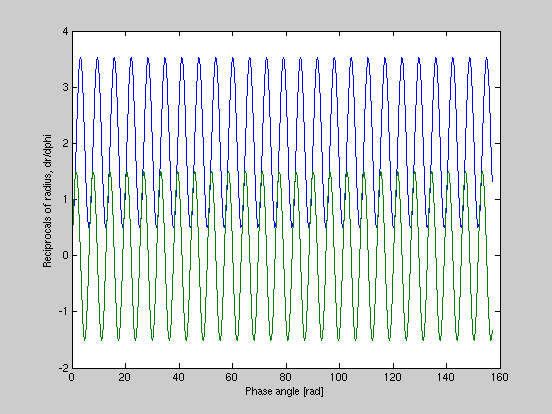
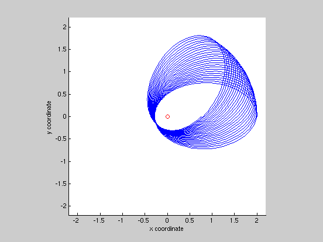

Script uses numerical solution of ODE to plot orbit
Expressions from Prof. Harrington's ASTR320 notes on orbits, including the General Relativity term yielding orbital "precession."
This script is from orbitDemo.m. A separate grOrbitFn.m function defines the second-order ODE.
AH 2010.1.31
Contents
Set up conditions
phaSpan = [0, 25*2*pi]; % phase range ic = [0.5; 0]; % initial conditions for 1/r and 1/dr/dp
Solve for orbit
options = odeset('reltol', 1e-6, 'abstol', 1e-8); % sets numerical tolerances to make a smoother plot (more points) [p, z] = ode45('grOrbitFn', phaSpan, ic, options); % solves for the orbit, where % p is phase along orbit % z is proportional to reciprocal of radius % z(:,1) is 1/radius, z(:,2) is 1/dr/dp
Then plot it up
% First plot reciprocal of radius and dr/dphi terms figure(1) % set to figure 1 clf % clear plotting area plot(p, z); % plot both elements in y vs. phase xlabel('Phase angle [rad]') % axis labels ylabel('Reciprocals of radius, dr/dphi') % Then plot the orbit figure(2) % set to figure 2 clf % clear plotting area x = 1./z(:,1) .* cos(p); % radius in cartesian coordinates (x) y = 1./z(:,1) .* sin(p); % radius in cartesian coordinates (y) mxr = max(x)*1.1; % maximum x value for plot scaling hold on % lock plotting region axis([-mxr mxr -mxr mxr]); axis square % make plot area square plot(0, 0, 'ro') % point showing focus plot(x, y) % plot orbit % comet(x, y) % or plot with this to watch path change xlabel('x coordinate') % axis labels ylabel('y coordinate') hold off % done with plot, release 